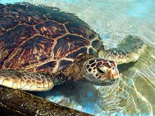
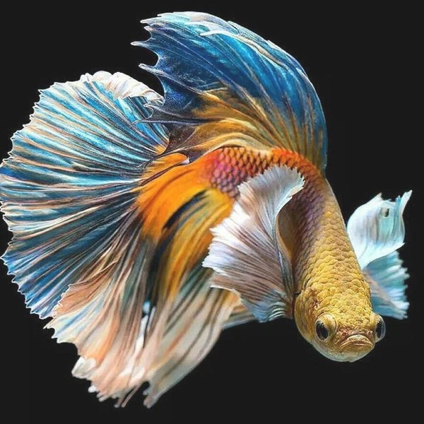

Penyu atau katung adalah kura-kura laut yang ditemukan di semua samudra di dunia. Penyu sudah ada sejak akhir zaman Kapur atau seusia dengan dinosaurus

Ikan badut ini dapat dikenali dengan warna jingga ikan ini bisa tumbuh mencapai 8cm serta termasuk dalam ikan terpopuler didunia

Channa adalah sebuah genus ikan predator dalam famili Channidae yang berasal dari habitat air tawar di Asia.

Ikan cupang, atau Betta splendens, adalah ikan air tawar yang populer sebagai ikan hias karena memiliki berbagai warna dan corak yang indah